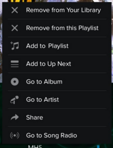

Invision.
Redesigning a music application to improve the user's experience while creating, deleting, or editing a music playlist.
The first part of the project was the analysis of multiple apps -- by interviewing users and gathering user scenarios, we each gathered use cases from three people on their music players.
Not only that, however, but we also navigated through multiple music applications in order to get a feel for their navigation trees for the sake of information architecture. After doing our analyses, we used Invision to recreate a mobile music application that we felt would improve on the flaws present in the pre-existing applications.
As a student who has never studied design or user interaction at any length previous to this class, many of the challenges I ended up facing in this project was due to the fact that I did not have a strong understanding of usability heuristics. Having never paid attention to such things before, it felt discomfiting to have to pick apart the product of others' work.
When it came to this application mock-up, we decided not to change much about the home screen of our application. The basic navigation tree was kept similar to those of the applications we analyzed, because they already felt intuitive.
Instead, we ended up making the most modifications to the process of modifying playlists -- many of the applications we saw made it unsuitably difficult to add or remove multiple songs at once. We chose to add not only a menu on the song list (to add to a playlist), but another menu on the 'playlist' page.
This menu enables the user to modify the playlist from the playlist, as opposed to only from the songs page. We chose to add a function that allowed users to choose multiple songs to append to the playlist (or remove songs, if desired, as well as changing the ordering of songs).
While it was not easy to decide what to implement, especially as many of the mainstream applications we analyzed did not fully support easy editing of multiple songs at once, we felt that the greatest frustration of many of our users were the limitations of their chosen music application in that regard.